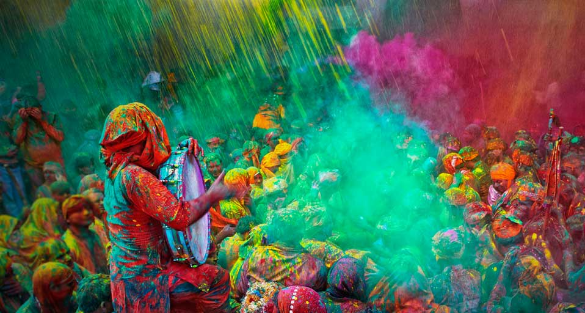
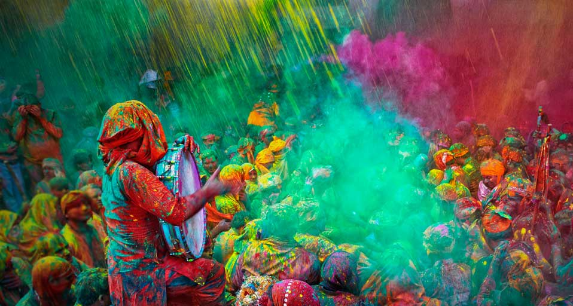

VIEWS
Photo by Frank Holleman on Unsplash
The best color in the whole world, is the one that looks good, on you…
— COCO CHANEL
A set of guiding principles that be used to create harmonious color combinations using relationships between colors.
Hue Lightness Saturation
Contrast
All colors are the friends of their neighbors and the lovers of their opposites — Marc Chagall
Color is experienced on many levels with influences coming from culture, emotion, physical, and other associations. The meaning we give to color may come from our unique experiences and identity. It is important to be aware of these social and cultural connotations when selecting a palette to convey meaning.
Colors are the mother tongue of the subconscious
— Carl Jung
Let’s look at a few examples:
Red
Yellow
Blue
Green
Purple
Orange
Forms of mixing * The Transparency Effect.
Figure and Ground
Symmetrical Balance
Radial Balance
Color Systems
color_wheel <- wheel("darkblue", num = 12)
color_wheel## [1] "#00008B" "#46008B" "#8B008B" "#8B0046" "#8B0000" "#8B4500" "#8B8B00"
## [8] "#468B00" "#008B00" "#008B45" "#008B8B" "#00468B"#girafe(ggobj = color_wheel, width_svg = 1280/72, height_svg = 720/72,
# options = list(opts_sizing(rescale = TRUE, width = 1.0)))
# define some colors
some_colors = setColors("#3D6DCC", 15)
# pizza plot
pizza(some_colors)
# analagous scheme for color "#3D6DCC"
p_analogous <- analogous("#3D6DCC", plot=FALSE)
as.data.frame(p_analogous)# complementary scheme for color "#3D6DCC"
complementary("#3D6DCC", plot=FALSE)## [1] "#3D6DCC" "#CC9C3D"# split complementary scheme for color "#3D6DCC"
splitComp("#3D6DCC", plot=FALSE)## [1] "#3D6DCC" "#CC543D" "#B5CC3D"# triadic scheme for color "#3D6DCC"
triadic("#3D6DCC", plot=FALSE)## [1] "#3D6DCC" "#CC3D6D" "#6DCC3D"# tetradic scheme for color "#3D6DCC"
tetradic("#3D6DCC", plot=FALSE)## [1] "#3D6DCC" "#9C3DCC" "#CC9C3D" "#6DCC3D"# square scheme for color "#3D6DCC"
square("#3D6DCC", plot=FALSE)## [1] "#3D6DCC" "#CC3DB5" "#CC9C3D" "#3DCC54"# sequential colors for "#3D6DCC"
sequential("#3D6DCC", plot=FALSE)## [1] "#CCCCCCFF" "#C2C5CCFF" "#B8BECCFF" "#ADB8CCFF" "#A3B1CCFF" "#99AACCFF"
## [7] "#8FA3CCFF" "#859DCCFF" "#7A96CCFF" "#708FCCFF" "#6688CCFF" "#5C81CCFF"
## [13] "#527BCCFF" "#4774CCFF" "#3D6DCCFF" "#3366CCFF" "#2960CCFF" "#1F59CCFF"
## [19] "#1452CCFF" "#0A4BCCFF" "#0044CCFF"Hue: A “hue” is the color itself - so green, blue, red, purple, etc. Tint: A “tint” is when white is added to a hue, making that hue lighter. Shade: A “shade” is when you instead add black to a hue, making it darker. Tone: A tone is created when grey is added to a hue.
HUE: this distinguishes one color family from another. It can also be called the parent or source color, and is interchangeably used with the word ‘color.’ VALUE: the lightness or darkness of a color. All colors can be described as being light, medium or dark in tone, such as a pale blue sky or a dark blue sea. CHROMA: refers to a color’s purity or its brightness or dullness of a color. For example, the stronger or brighter a color is, the higher its chroma. Every color can be identified by how bright/intense/saturated it is or how dull/de-saturated/less intense it is. You can alter the chroma of a color by adding white, grey, another color, its color complement or black. Chroma is also called saturation and intensity.
These are hue, saturation, and intensity or brightness.
Monochromatic : use one hue (such as blue) and then use various tints or shades of that original color.
Analogous : created by choosing hues that are next to each other on the color wheel. So, for example, blue-green, green and yellow-green.
analogous("darkblue")
## [1] "#00008B" "#46008B" "#00468B"Complementary : created by choosing two colors that are opposites on the color wheel. Because of these colors being exact opposites, they offer high contrast and have a high impact.
complementary("steelblue")
## [1] "#4682B4" "#B47846"Split Complementary : created by taking one color and then taking the two colors that are either side of what would be the first colors complementary.
splitComp("steelblue")
## [1] "#4682B4" "#B4464B" "#B4AF46"Square color scheme
square("steelblue")
## [1] "#4682B4" "#AF46B4" "#B47846" "#4BB446"Triadic : use three colors that are evenly spaced around the color wheel, for example purple, orange and green.

## [1] "#FF6347" "#47FF63" "#6347FF"Tetradic : work by pairing up two sets of complementary color schemes. It almost works by almost creating a rectangle around the color wheel.
tetradic("steelblue")
## [1] "#4682B4" "#7846B4" "#B47846" "#82B446"These three functions roughly correspond to different types of color palettes.
Discrete variables Use qualitative color palettes to distinguish between different kinds of a categorical variable;
Tip: the chosen palette depends on the number of unique categorical variables. A dataset with more than 8 categories can create some confusion in distinguishing identities as the differences between colors becomes more difficult to easily detect.
Continuous variables Use sequential or diverging color palettes to distinguish between the levels of a continuous variable;
Use hybrid color palettes for conveying more complex messages. For instance, paired color palettes combine qualitative and sequential aspects. Similarly, sequential color scales with accent colors emphasize both continuity and contrasts to highlight some elements.
 

# Extract all colors
india_file <- "assets/images/india-holi-festival-colors-1.jpg"
# india_all <- get_colors(india_file)
# Extract three most frequent colors
# india_top <- get_colors(india_file, top_n = 50)
# Extract colors that fill over 20% of the area
# get_colors(india_file, min_share = 0.2)
# Extract all colors except white
# get_colors(india_file, exclude_col = "white")
# plot_colors(india_top)
# india_palette <- make_palette(india_all)
# india_palette
india_image <- load.image(india_file)
india_highest <- threshold(india_image,"98%") %>% plot(main="Determinant: 1% highest values")
display_palette(image_palette(india_image, n=10))
scales::show_col(image_pal(india_image)(10))
#Discrete scale example
p <- ggplot(mtcars, aes(wt, mpg))
p + geom_point(size=4, aes(colour = factor(cyl))) +
scale_color_image(image = india_image) +
theme_bw()
#Continuous scale example
dsub <- subset(diamonds, x > 5 & x < 6 & y > 5 & y < 6)
dsub$diff <- with(dsub, sqrt(abs(x-y))* sign(x-y))
d <- ggplot(dsub, aes(x, y, colour=diff)) + geom_point()
d + scale_color_image(image = india_image, discrete=FALSE) + theme_bw()
# Extract all colors
haring_file <- "assets/images/artist-keith-haring.jpg"
# haring_all <- get_colors(haring_file)
# Extract three most frequent colors
# haring_top <- get_colors(haring_file, top_n = 10)
# Extract colors that fill over 20% of the area
# get_colors(haring_file, min_share = 0.15)
# Extract all colors except white
# get_colors(haring_file, exclude_col = "black")
# plot_colors(haring_top)
# haring_palette <- make_palette(haring_all)
# haring_palette
haring_image <- load.image(haring_file)
haring_highest <- threshold(india_image,"98%") %>% plot(main="Determinant: 1% highest values")
haring_highest## Image. Width: 958 pix Height: 512 pix Depth: 1 Colour channels: 3display_palette(image_palette(haring_image, n=10))
scales::show_col(image_pal(haring_image)(10))
#Discrete scale example
p <- ggplot(mtcars, aes(wt, mpg))
p + geom_point(size=4, aes(colour = factor(cyl))) +
scale_color_image(image = haring_image) +
theme_bw()
#Continuous scale example
dsub <- subset(diamonds, x > 5 & x < 6 & y > 5 & y < 6)
dsub$diff <- with(dsub, sqrt(abs(x-y))* sign(x-y))
d <- ggplot(dsub, aes(x, y, colour=diff)) + geom_point()
d + scale_color_image(image = haring_image, discrete=FALSE) + theme_bw()
RGB (red, green, blue): The default intensity scale in R ranges from 0-1; but another commonly used scale is 0- 255. This is obtained in R using maxColorValue=255. alpha is an optional argument for transparency, with the same intensity scale
CMYK
HSV (hue, saturation, value): values range from 0-1, with optional alpha argument
HCL (hue, chroma, luminance): hue describes the color and ranges from 0-360; 0 = red, 120 = green, blue = 240, etc. Range of chroma and luminance depend on hue and each other
HEX